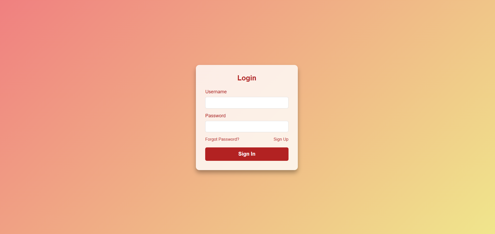
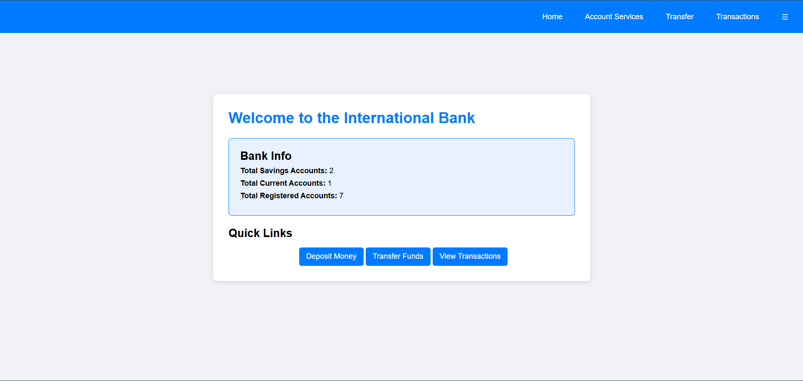
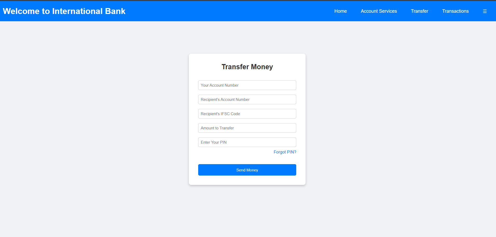
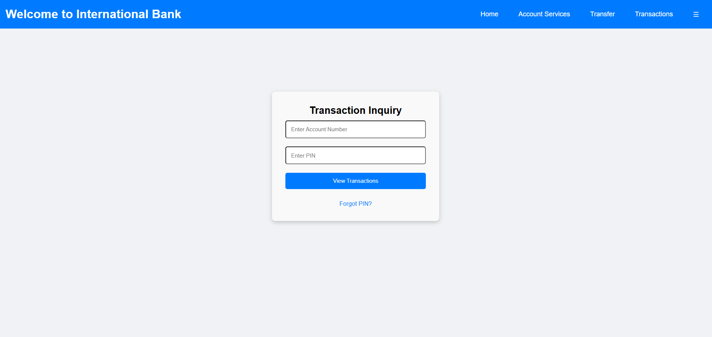
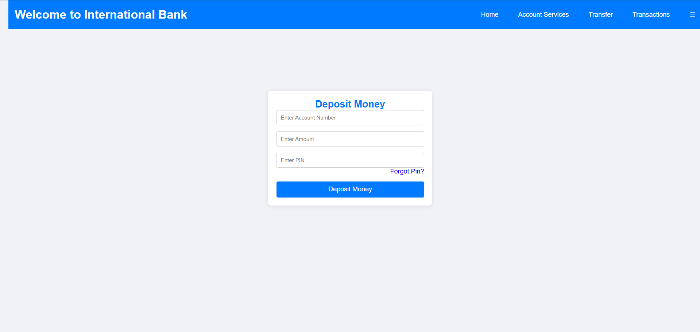

Bank Management System
The Bank Management System is a robust web application designed to streamline
banking operations using technologies such as Servlets, JSP, JDBC, and advanced
Java concepts. The system effectively utilizes the MySQL database for reliable
data storage and management, ensuring secure handling of user information.
This system enables essential banking functionalities, including financial
transactions like deposits, withdrawals, and transfers, ensuring seamless money
management. It also supports CRUD (Create, Read, Update, Delete) operations on
bank accounts.
All the latest attempts are stored in the MySQL Database.
A comprehensive transaction history feature is incorporated, allowing users to review past Activities for better financial tracking.
Technologies:
- - Advance Java
- - Servlets, JDBC, JSP
- - MySQLs
Login Page
Home Page

Transaction page

Transaction Enquiry Page

Deposit Money Page
